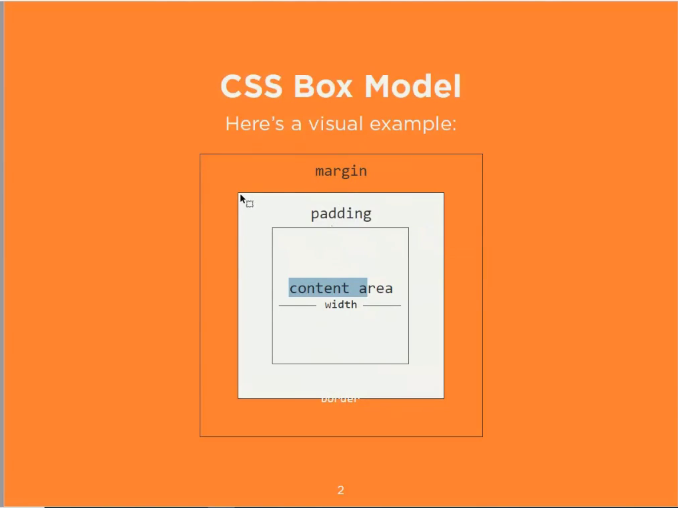
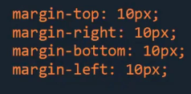
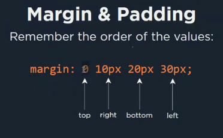
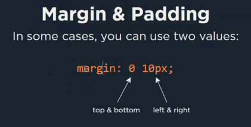
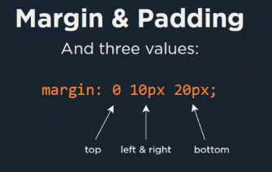
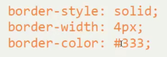

- Think all the elements of HTML appearing as a box in a page
- Both inline and Block level elements occupy a box
- inline HTML element: do not occupy the fill width of the page
- block level HTML element: they occupy the full width of the page
- all the boxes has margin, padding and border
- block level elements have width property whereas
- inline level elements do not have width property
- In the below image, consider the element (2nd box) which is our element

- Padding: the inner part of a html element is called as padding
- margin: the outer part of html element is called as margin
- inline elements: they do not display vertical margin
- but they display left and right margin (did not understand)
- Margin can be defined as follows:
margin-top: 10px;
margin-right: 10px;
margin-bottom: 10px;
margin-left: 10px;

- if all sides of the box are of same width (which means we need to give 10px space to top, right, bottom and left
- then it can be written as:
margin: 10px;
- There is an another way to write the margin values in single row
margin: 0 10px 20px 30px;
Here
0: represents top
10px: represents right
20px: represents bottom
30px: represents left

- padding also behaves the same instead of margin use padding with above syntax
- There are few other ways of representation (2 value representation
- margin: 0 10px;
Here
0: represents top and bottom and
10px: represents left and right

- margin and padding (3 value representation)
- margin: 0 10px 20px;
Here
0: represents top
10px: represents left and right and
20px: represents bottom

- borders: also work the same way as margin and padding
- borders have three property (style width and color)
border-style: solid; (other style: single line, double line, dotted, dashed)
border-width: 4px;
border-color: #333;

- alter option to write the border in single line
border: solid 1px red;
- In border it is non mandatory to write the border in same order of representation (style, width and color)
- the values can be interchanged also
- border: solid red 1px;
- borders once defined can also be overridden
border: solid 1px red;
border-bottom: green;
Here the order color is defined as red and then only the bottom-border is defined with green color